Salon OM · Option 2.2 · reference page
Real screens from products that solve the same jobs (arrive, see the visit, trust, the offer, act), grouped by the visitor's steps. The design stays 2.2; the references shape the order and the sections each version uses.
1 · Arrive: the first screen
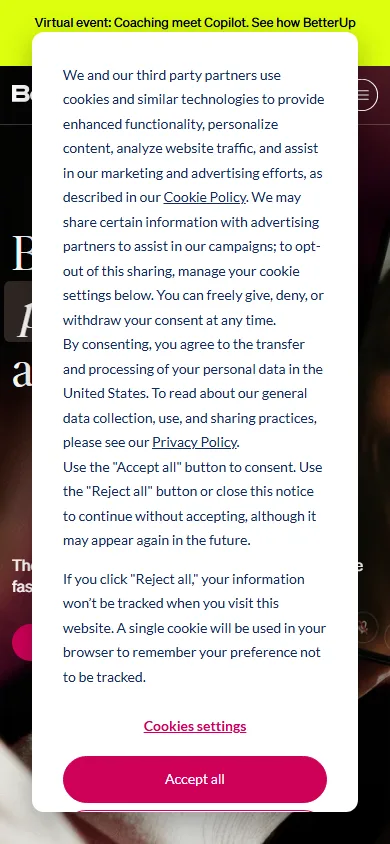
BetterUp · https://www.betterup.com/
A dark, calm hero with one promise and one filled button; the second action is a quiet link. G and S: "Book your visit" filled, "Inner Work with Maggie" ghost.
Talkspace · https://www.talkspace.com/
The proof sits right under the hook ("Research-backed therapy, covered by insurance"). G and S: the study's proof line in the first screen.
2 · See the whole visit before the steps
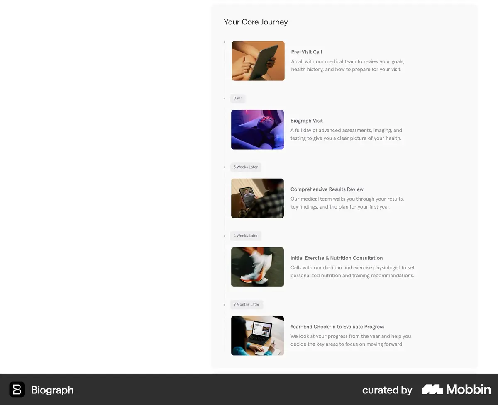
Biograph (Mobbin) · https://mobbin.com/sites/sections/12e6b86f-2523-4ad6-872b-47cecd653f28
"Your Core Journey": numbered stops on one line with a photo each. G: the five-step preview, which leaves into the step rail.
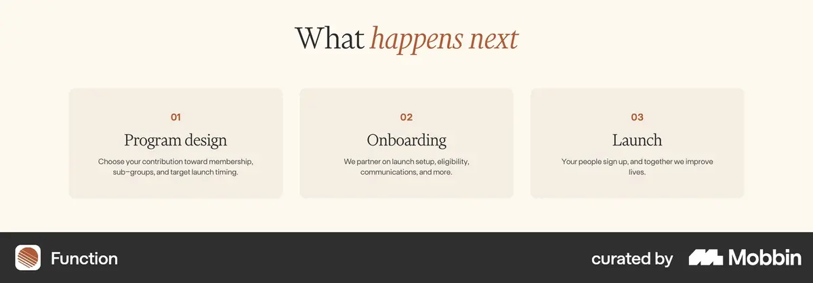
Function (Mobbin) · https://mobbin.com/sites/sections/8fd46d14-3db8-41b8-9dec-ed170e1118b6
"What happens next" in three calm numbered cards. S: the whole visit as one screen of five.
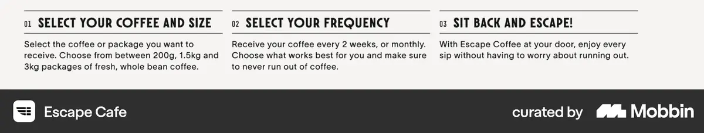
Escape Cafe (Mobbin) · https://mobbin.com/sites/sections/68d54554-65f5-4fd2-a974-c30e7c9eaffc
Numbered steps as one row, a line each. The Inner Work path: four steps in a row with the pricing line under them.
3 · Trust: the people and the proof
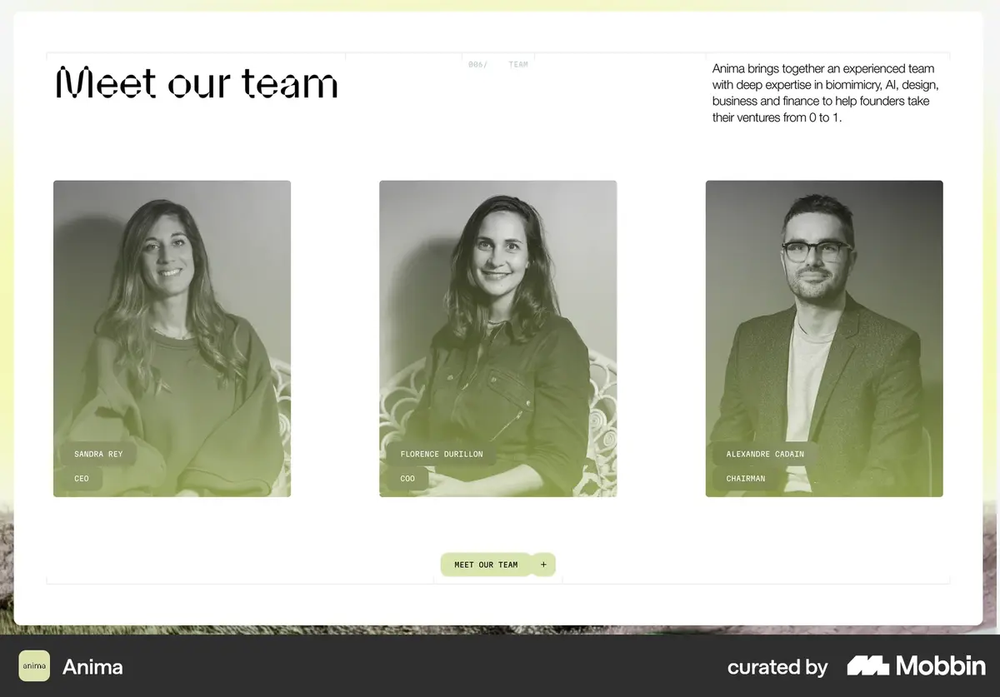
Anima (Mobbin) · https://mobbin.com/sites/sections/5151f1c7-7ebf-429b-97c4-299719e57b48
"Meet our team": large portraits, name and role, nothing else. M and G: Maggie's letter layout with Katie and Chesney signed in below.
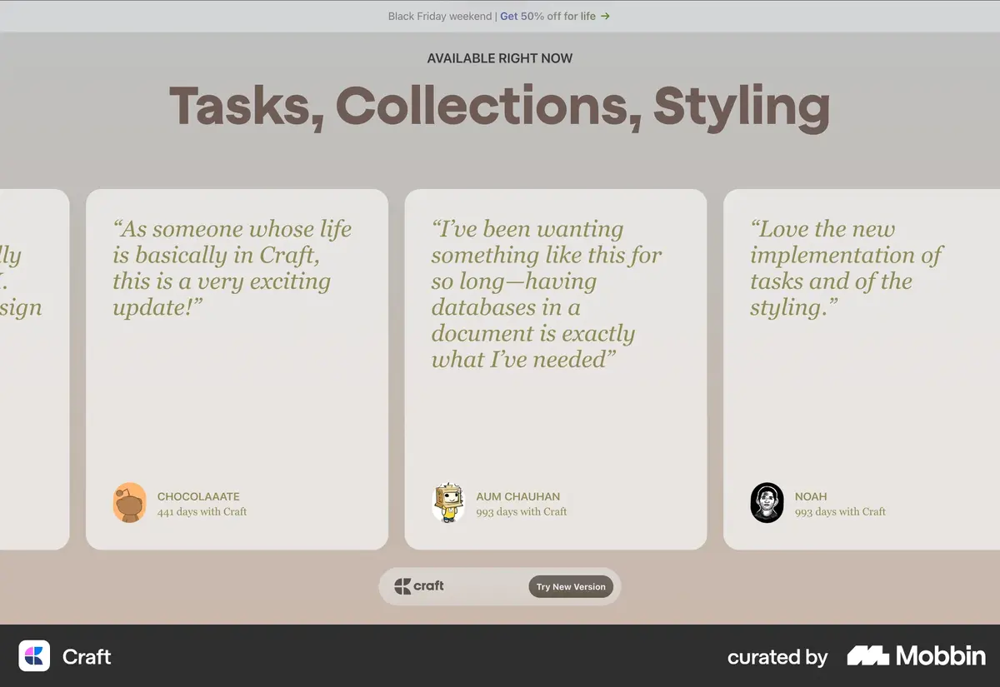
Craft (Mobbin) · https://mobbin.com/sites/sections/27893108-c769-431b-ad8e-b141b4b27c76
Big italic quotes with initials and context. G and S: guest words in the serif italic, initials only (Maggie's rule).
VanMoof (Mobbin) · https://mobbin.com/sites/sections/e7517a67-32f9-413d-98ca-742b6bdd0206
One quote at a time, quiet controls. 2.2's Voices already does this; G adds "Book your visit" under it.
4 · The offer: services and prices
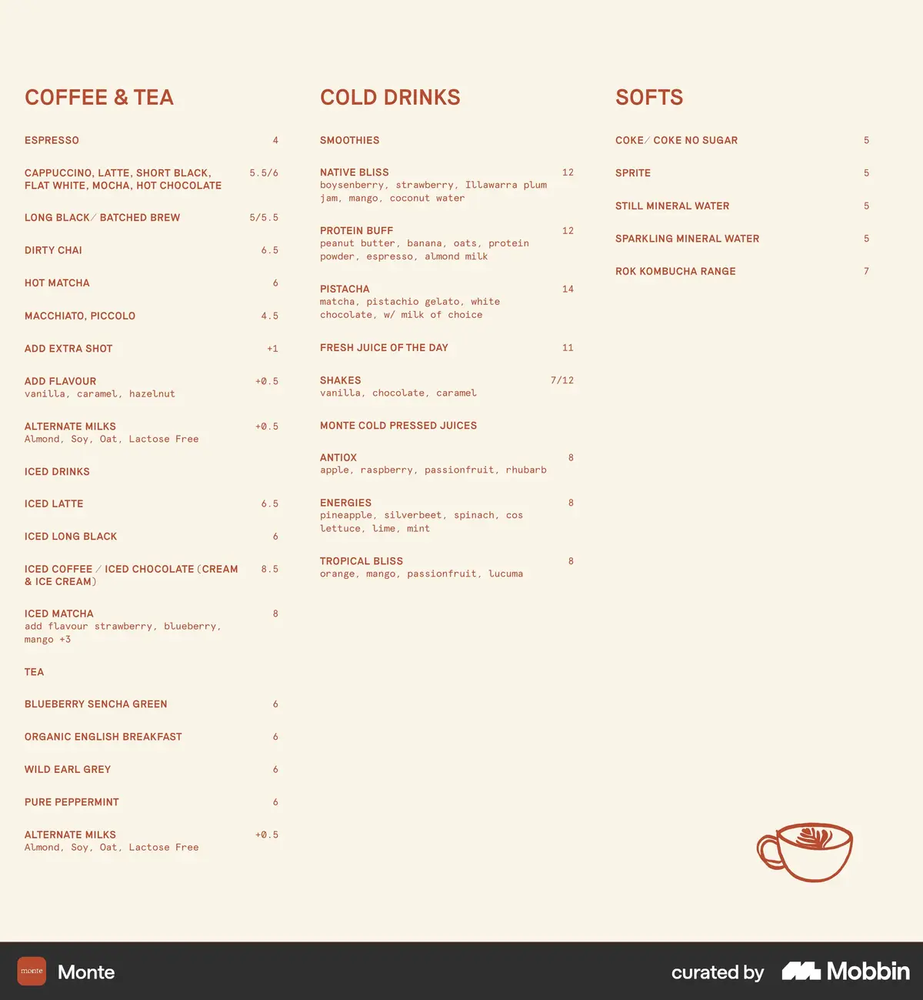
Monte (Mobbin) · https://mobbin.com/sites/sections/9cea9d4c-5557-44cf-97e4-41d7d086df12
A menu set like a printed menu: name, a short line, the price on the right. All three: Maggie's six services with triplets and prices in 2.2's quiet menu.
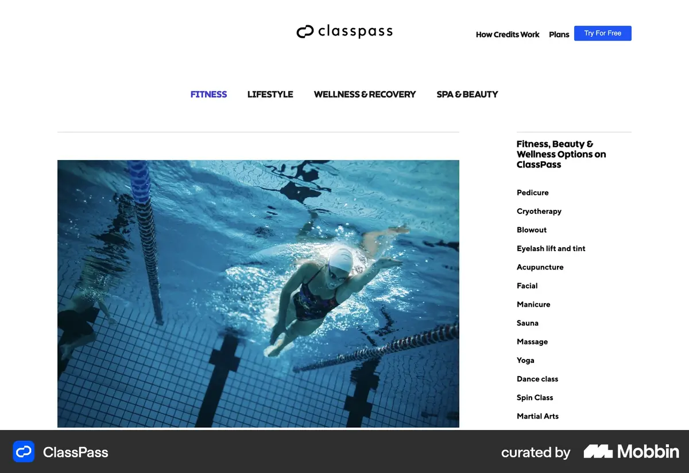
ClassPass (Mobbin) · https://mobbin.com/sites/sections/76254648-1940-4409-b392-09a2361482e7
A photo beside a list of services that changes with the row. Kept from 2.2: the photo beside the menu changes with the open service.
5 · The deeper door and the path (Inner Work)
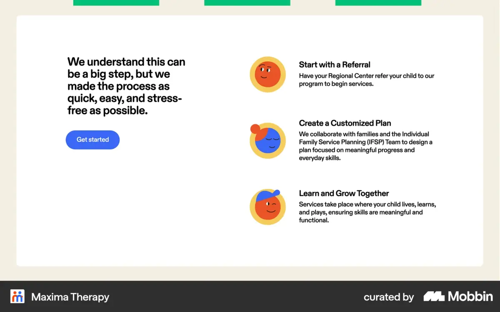
Maxima Therapy (Mobbin) · https://mobbin.com/sites/sections/975a61f8-c018-4d2f-8511-a62d89f9885b
"We understand this can be a big step": reassurance beside three steps and one button. The Inner Work path and its Connection Call.
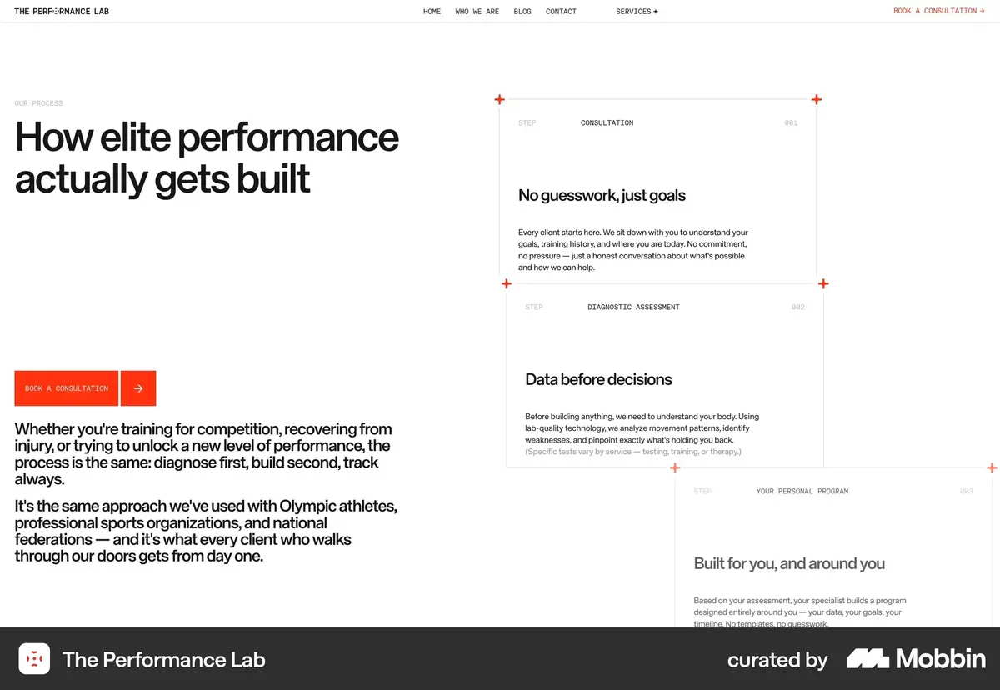
The Performance Lab (Mobbin) · https://mobbin.com/sites/sections/6478449d-7cb6-4686-9294-d44c0912ace0
Long, serious text on the left, the process on the right. Inner Work's "Look a little deeper" and "How we work together": heading left, Maggie's words right.
6 · Act: one action, the same words
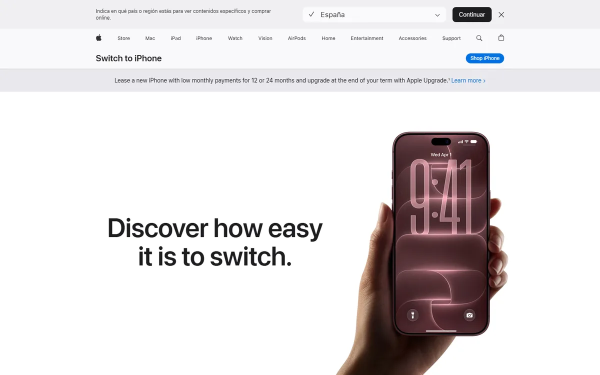
Apple, Switch to iPhone · https://www.apple.com/iphone/switch/
A long page that repeats one action in the same words where each section pays off. G: "Book your visit" after the steps, Why Aveda, Voices, the menu and Begin, never after a story beat.
7 · The visit hands over to the step rail
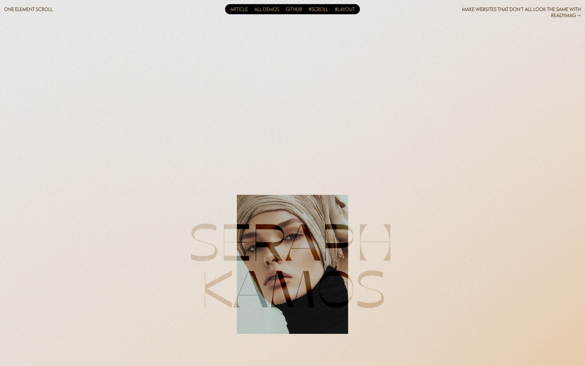
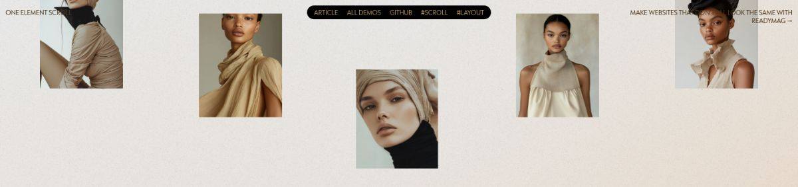
Codrops, One Element Scroll · https://tympanus.net/Development/OneElementScroll/
One photo travels from the opening into a row as you scroll: the same thing moves, nothing new appears. M and G: each stop's own number and name travel to the rail, so the reader sees the rail is the same five steps.
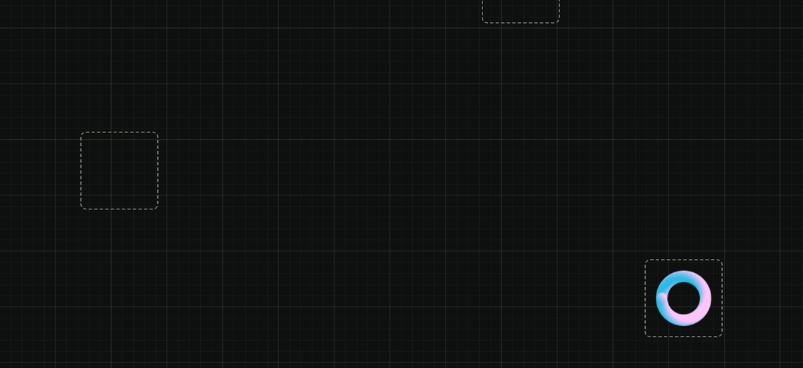
GSAP, ScrollTrigger Consecutive Scrub Flips · https://codepen.io/GreenSock/full/JjVPyxd
One element passes from one marked place to the next, tied to the scroll. M and G take the hand-over but play it in time (each stop 1.2 s, 0.15 s after the one before, the site's in-out ease): the slide's snap is too short to read a move tied to the scroll. Osmo's progress navigation was also looked for; it sits behind a login.
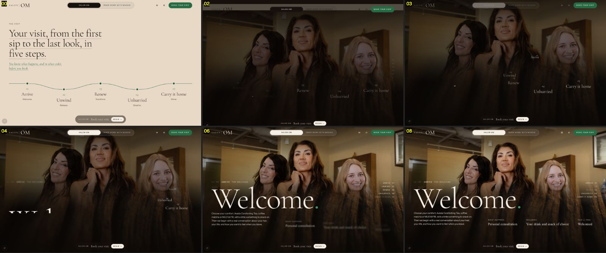
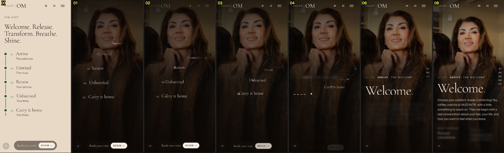
Ours, recorded 17 Nov · G at 1440 (Chrome engine, Page Down), M at 390 (Chrome engine, a finger's drag)
As the visit preview starts to leave, its five stops lift off where you saw them and stay while the page slides away, turning ivory over the photo. Then, from 01 to 05, each number flies on a soft arc to its number on the rail and each name to its label, which shows as it lands and then settles; the line unthreads behind them. Scroll back up and they fly back to the line in the same order while the line draws itself again; turning round mid-flight sends each one back from where it is. On the phone the rail has numbers only, so each name fades before it meets its number. S has no step rail, so nothing flies there. With reduced motion the rail simply fades in.
8 · The pause: a breath, then being cared for
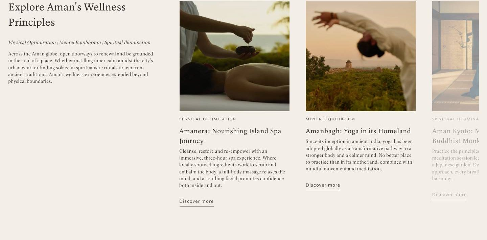
Aman, Wellness · https://www.aman.com/wellness
Care is shown, never described: a guest receiving it, eyes closed, warm light, the words calm and few beside the picture. The pause shows one guest at Salon OM's basin below the Aveda poster, head back, eyes closed, a towel round her shoulders, instead of an empty chair.
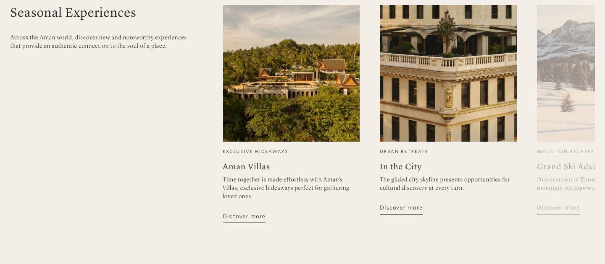
Aman, Spa · https://www.aman.com/spa
The words hold the left, the pictures run off the right edge of the screen, so the eye travels out into the place. The pause: the question on the left, the picture large on the right and running off the edge; no arch, no three columns.
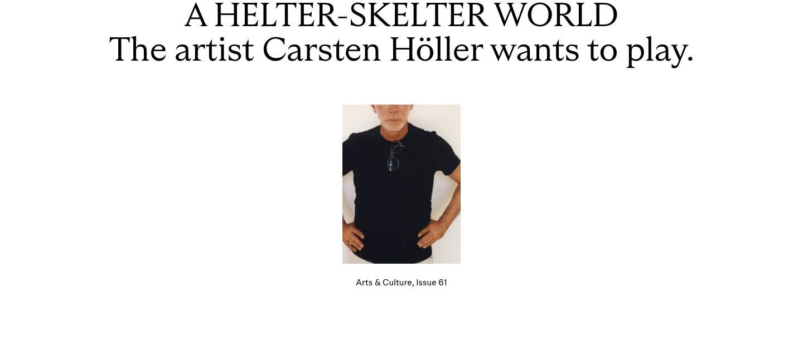
Kinfolk · https://www.kinfolk.com/
Two sizes of the same serif make the hierarchy: the short line large, the longer one quieter under it. The pause: "Take a breath." large on its own line, the question smaller under it, arriving one breath later, the same letters coming into focus (row 15).
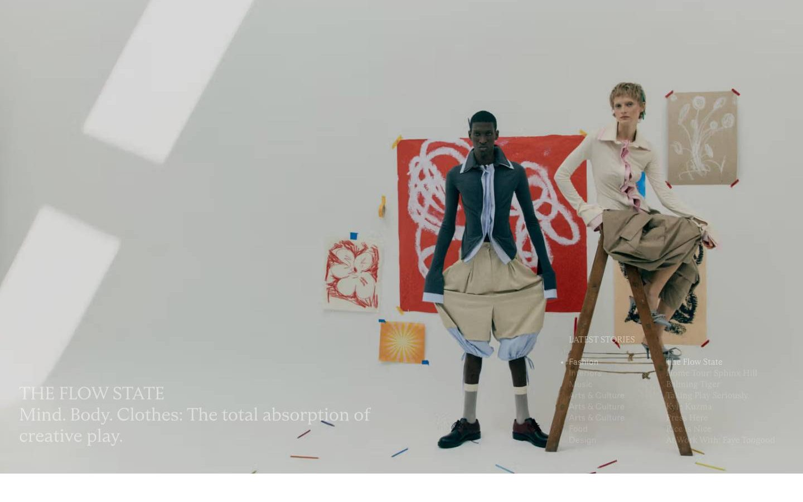
Kinfolk, issue 61 · https://www.kinfolk.com/
A caption belongs to its photograph. The pause: "You deserve this moment." sits under the picture as its caption, the answer to the question, said of the guest you are looking at.
Motion, kept and new
Kept: the letters coming into focus out of a blur (J, 17 Nov: "I LOVE that out of focus coming in text animation") and the breath, a 10 s cycle, 4 s in and 6 s out, after Apple's Mindfulness Breathe; it now moves only the picture's scale and light. Gone: the arch, the rings and the glow (J: "remove those green lines radiating from the image ... Remove the glow"). New: the picture opens like the doorway it is taken through, from a thin upright line to the full frame, coming into focus as it opens, the same way the letters do. With reduced motion everything is still.
The proposal, screen by screen
| M · Maggie's order | G · Guided | S · Short | |
|---|---|---|---|
| First screen | Her locked first screen, two equal doors | + the proof line, "Book your visit" first (BetterUp, Talkspace) | as G |
| The visit | The pause, OM, then five step screens in her words | The pause, the five-step preview (Biograph), five steps with one benefit line each | One screen of five (Function) |
| Trust | Why Aveda, the team, the menu, then Voices (her order) | Why Aveda with facts, the team, Voices, then the menu (proof before price) | Team + two quotes + one Aveda line on one screen (Anima, Craft) |
| Offer | Her six services, triplets and prices in 2.2's menu (Monte, ClassPass) | ||
| Inner Work | Her opening, Look a little deeper, How we work together, credentials, the path | + short credentials under the opening, a Connection Call after the practices and on the path (Maxima) | Five screens: opening, the first and last of "Look a little deeper", the six practices, the path, Begin |
| Action | Header, bottom anchor, Begin | + after each cycle's reward, same words every time (Apple Switch) | |
9 · Why Aveda: what is in your color?
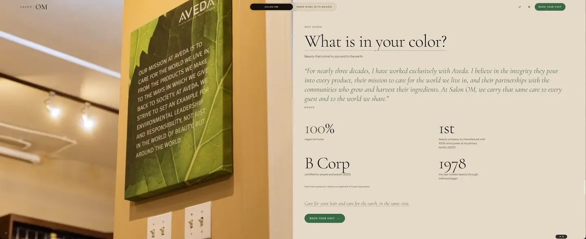
Ours, before · J's capture of G at his 6K window, 17 Nov
A plain 50/50 split; the picture a soft, upscaled crop of the mission canvas with two light switches in it. J: "terrible, low resolution and it's clearly a crop of a bigger image". M has no picture at all here.
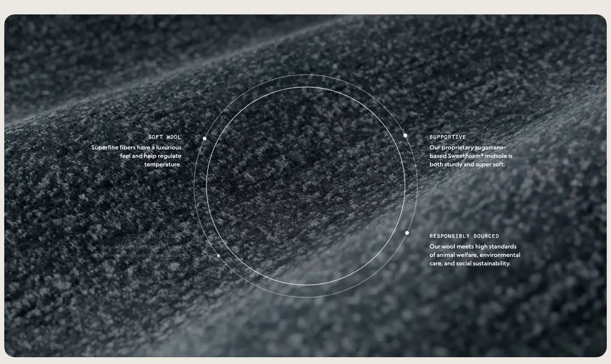
Allbirds, Wool Runners · https://www.allbirds.com/products/mens-wool-runners
What the product is made of, said on a full-bleed close-up of the material itself: the photograph is the proof, the words sit on it. We take the full-bleed, sharp, real material; not the rings (J removed rings from the pause).
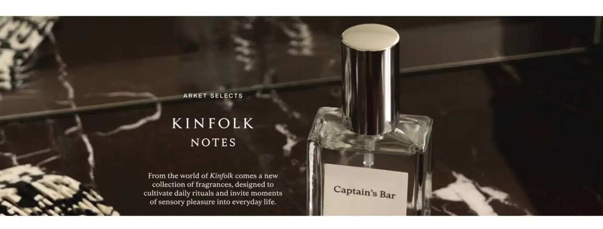
Kinfolk, Notes · https://www.kinfolk.com/
A plain ivory label on the real object carries the words, calm serif on a quiet card. We take the label as the idea: the four facts set like the label on a bottle.
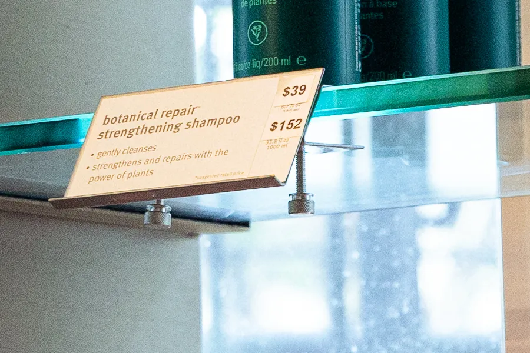
Salon OM's own shelf · the photographer's original 7 (Aveda product shelves), 8192 x 5464, at 1:1
Her shelves already speak in labels ("strengthens and repairs with the power of plants"). The section's label is drawn in the same voice: ivory card, hairline rules, the number then the words.
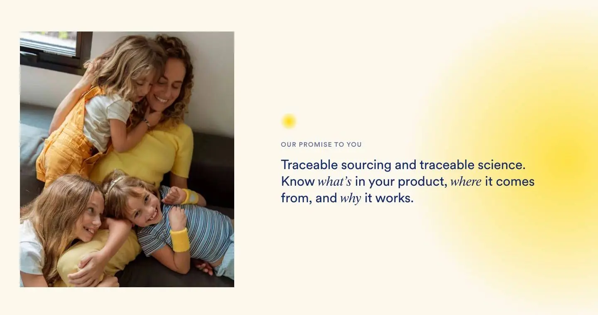
Ritual, Our Story · https://ritual.com/made-traceable
The same question as a promise: "Know what's in your product, where it comes from, and why it works." We take the promise; not its split layout. Aveda's own pages (aveda.com) refused the capture (403).
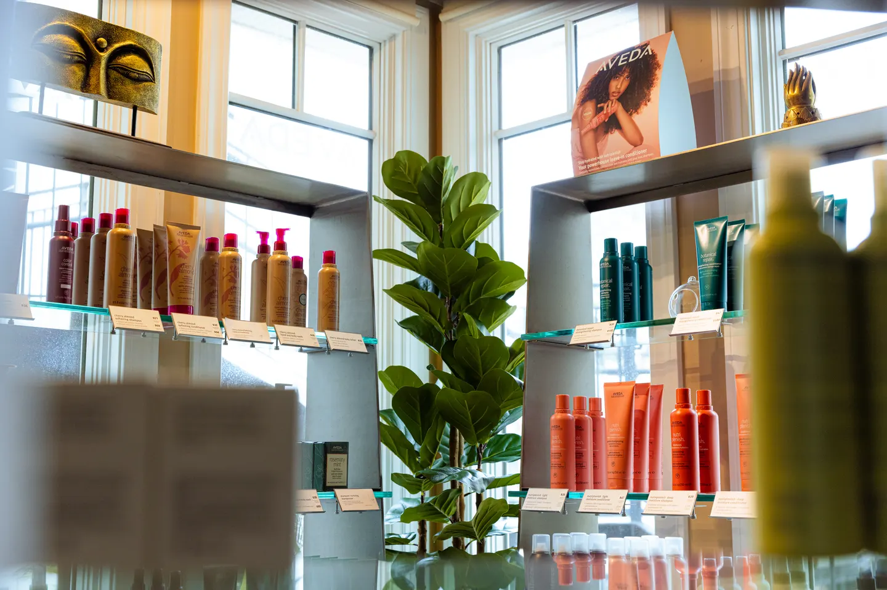
The picture · photographer's original 7, 8192 x 5464 (shown here whole)
Of her 17 photos this one tells the section's story: her Aveda products on glass shelves, a living plant at the centre, morning light through the windows; plants, products and care in one frame, shot through the shelf for depth. At J's 6K window the widest draw needs about 5,700 px: the original has 8,192, so it is sharp with room to spare. The colour bar (10) already carries step 3, and the canvas (15) is a sign on a wall beside two light switches.
| M | G | S | |
|---|---|---|---|
| Picture | The shelves photo, full-bleed into the right edge, sharp from the original at every size | The same photo, small, beside its line | |
| Layout | An ivory label card overlaps the photo's left edge: eyebrow, heading, the four facts as label rows (the number, then the words, hairline between), the source as the label's small print. Below, her quote set large as a letter, signed, then the one button. | The proof screen's Why Aveda line becomes one label row beside the photo | |
| Words | Hers, word for word: her heading, her quote, her four facts | "What is in your color?", her line beneath, her quote and facts, the reward line | Its line, unchanged |
| Motion | The photo settles in; the label's rows print in one by one, each rule drawing left to right; 100% counts up as before; reduced motion is a short fade | ||
| Phone | Heading, then the photo full width, the label card pulled up over its lower edge, then her letter and the button | The photo above the line | |
10 · The five steps: how they move as you scroll
J, 20 Nov: "I don't like any of the effects on the 5 steps scroll triggered, do something really beautiful and clean, simple and beautfiul and clean. Give more ideas but first remove the current ones." The three effects (the breath, crossfade, the sheet) are removed. In every idea below a step stays one screen, with its photo, its film and its sound as today; the only thing that changes is how the picture and the words move while you scroll from one step to the next.
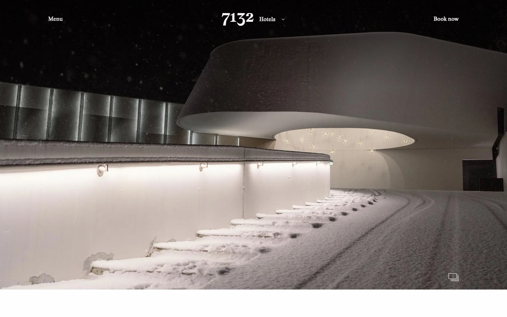
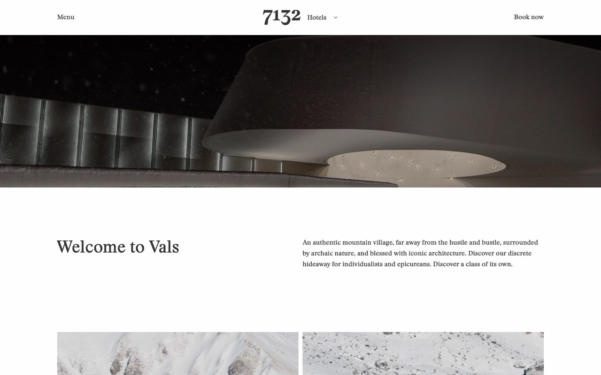
A · Still pictures · from 7132 Hotel, Vals (a spa hotel) · https://7132.com/en/
Their picture stays where it is while the page is drawn over it like a blind. For the steps: each step's picture stands still; only the edge between two steps travels, and each step's words travel with that edge. Why it suits a salon visit: nothing rushes past you; the rooms stay put and you move through them.
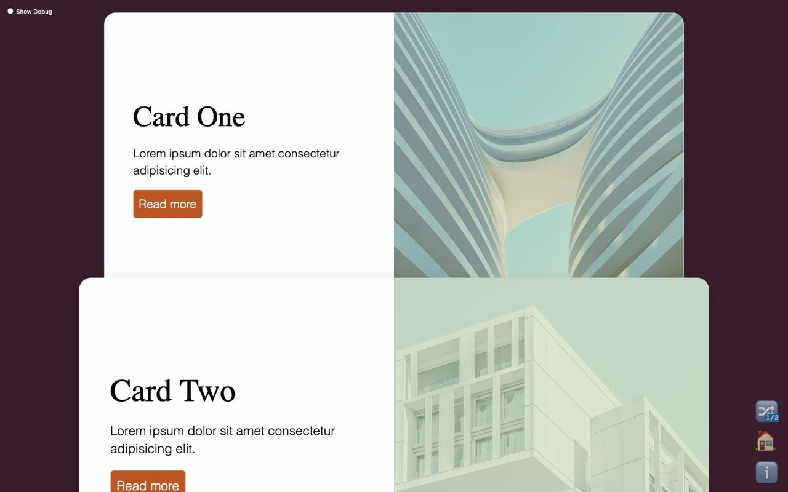
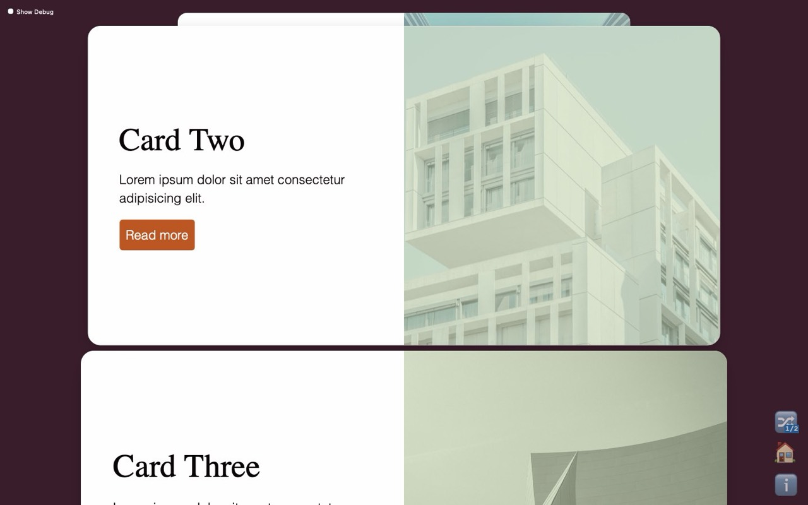
B · Sheets · from Scroll-driven Animations, Stacking Cards · https://scroll-driven-animations.style/demos/stacking-cards/css/
Each card is laid over the last, which settles back a little. For the steps: the next step arrives as one sheet, its picture and words together, laid over the step before with a soft shadow at its edge; the step before stays where it is and dims (it is not made smaller: at full screen that would show its edge as a line). Why it suits a salon visit: one thing rests while the next is laid on it, in order and unhurried. We take the motion only, full screen; not the small cards.
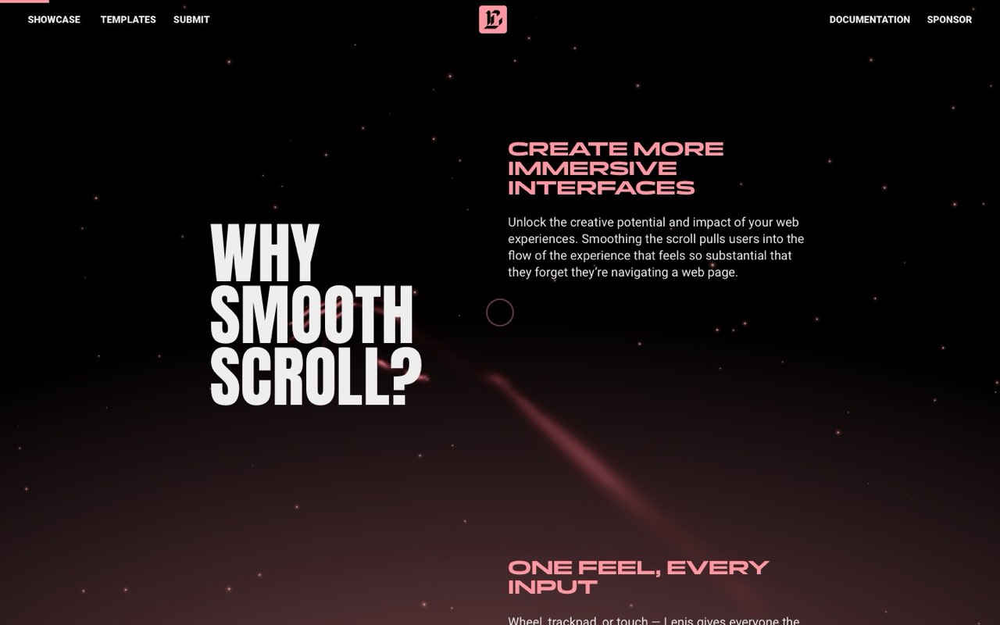
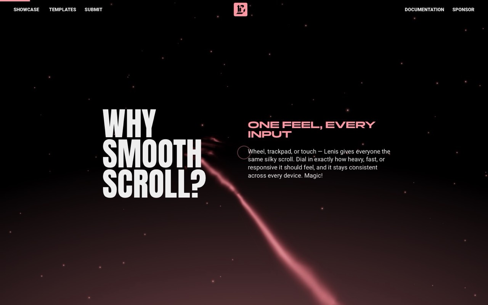
C · One room · from Lenis · https://lenis.dev/
One thing holds still while what belongs to it changes. For the steps: nothing travels at all. The picture dissolves softly into the next step's picture and the words change in place, so the five steps read as one room at five moments. Why it suits a salon visit: it is the stillest of the four; the eye never has to follow anything. We take only how it holds one thing still; not its look.
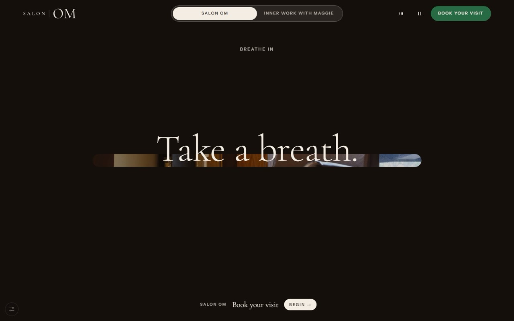
D · Into focus · from Salon OM's own pause · https://salon-om-2-2-m.web.app/#pause
J, 17 Nov: "I LOVE that out of focus coming in text animation". For the steps: each step arrives soft and comes into focus as it settles, the picture and then its title, the way "Take a breath." does. Why it suits a salon visit: it is already this page's own gesture, and it feels like opening your eyes.
| The picture | The words | Between two steps you see | |
|---|---|---|---|
| A · Still pictures | Stands still | Travel with their step | An edge drawn across two still pictures |
| B · Sheets | Arrives with its sheet; the one before stays and dims | Arrive on their sheet | A sheet laid over the last, a soft shadow at its edge |
| C · One room | Dissolves into the next | Change in place | One soft dissolve, nothing travelling |
| D · Into focus | Arrives soft, then sharp | The title sharpens just after the picture | The next step coming into focus |
| All four | One screen per step, the page's pull from step to step as today; each step's photo, film and sound as today; with calm motion set, today's steps. Built as choices under Shift+V on the five steps, in both worlds, on M and G; today's stays first until J picks. B was first drawn with rounded corners and the step before made a little smaller; both went: the smaller picture showed its edge as a line, and the corners cost a stutter on a 6K screen. | ||
Each way as it now runs on M under Shift+V on any step, caught half way between step 1 (Welcome) and step 2 (Unwind), in Safari's engine at 1440 wide, today's first. The photos, films and words are each step's own; only how one step hands over to the next changes.
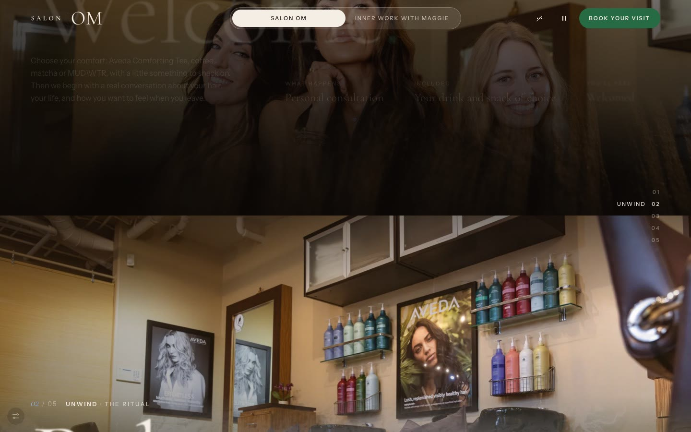
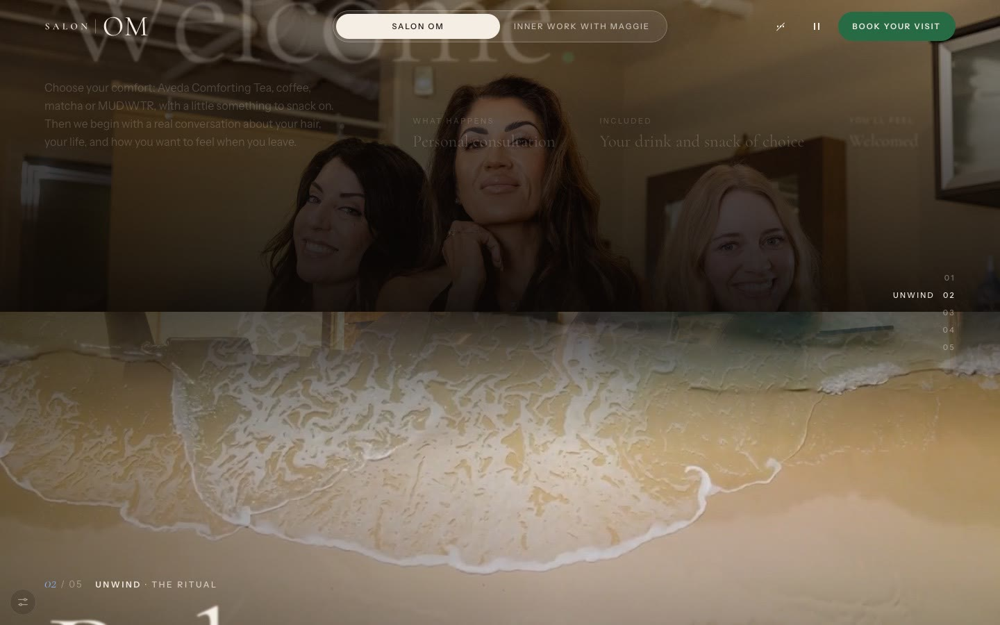
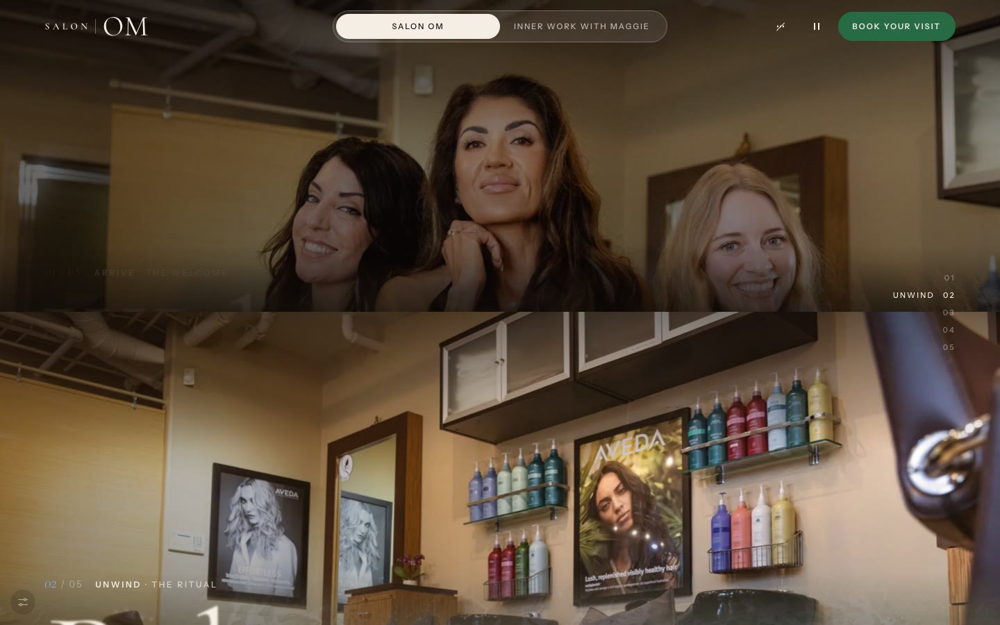
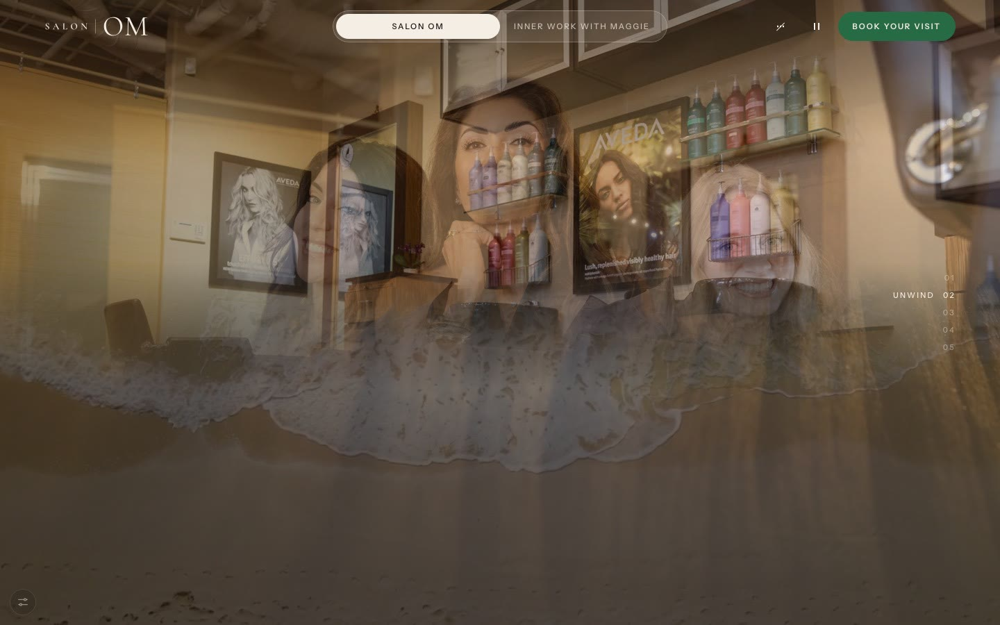
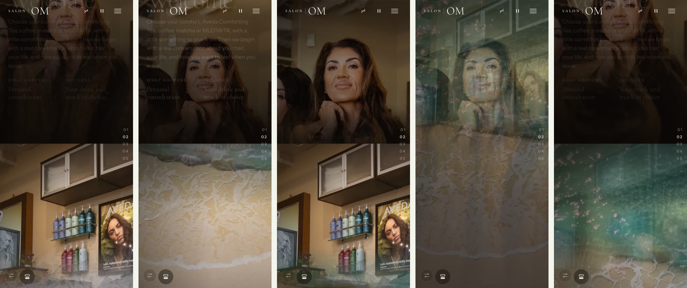
Captured from the sites themselves on 20 Nov, in Safari's engine at 1440 wide. Mobbin was not reachable from this session, so none of these is a Mobbin screen. Aman's own page showed only its cookie notice and is left out.
Drybar and Aesop were also chosen, but both sit behind a bot check and could not be captured. Mobbin screens are its curated captures of each site.